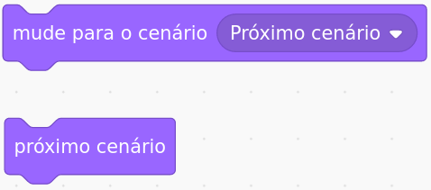

No Scratch Jr., quando fazemos uma mudança de cenário, estamos na verdade fazendo uma mudança de cena e todos os atores desaparecem e aparecem os novos atores que colocam nessa cena específica.
Já no Scratch, quando fazemos uma mudança de cenário, só o cenário muda (plano de fundo). Os atores continuam nos seus lugares, fazendo as mesmas ações que estavam fazendo anteriormente. Apesar de ser interessante para várias coisas, a mudança de cenário do Scratch, não é tão simples fazer uma alteração de cena igual fazemos no Scratch Jr.
Se você ainda tiver acesso ao Scratch Jr., entre nele e relembre como funcionava a mudança de cena lá;
Para mudarmos o cenário, usamos um desses dois blocos:
Depois, colocamos este bloco nos atores:
Este bloco vai permitir que a gente controle ação e o comportamento dos atores quando acontecer a mudança de cenário.
Agora, vocês vão criar uma história e fazê-la no Scratch. Sua história deve ter: